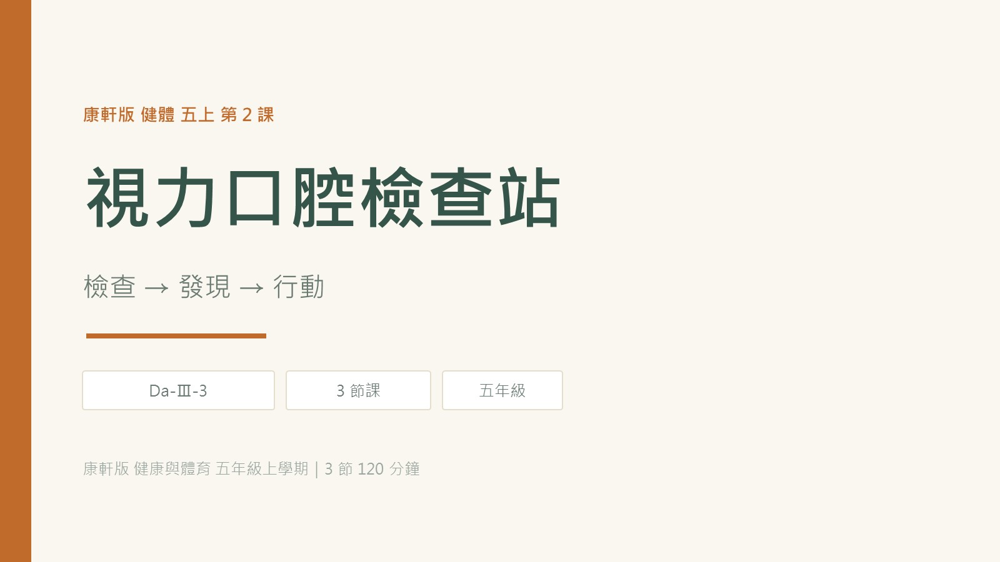

課程地圖
每一節都有一個「動手的任務」和一個「要記住的概念」。點標題可跳到該節的簡報頁。
互動實驗室
三個小活動對應三節課的重點：算用眼時間、判斷食物風險、找出刷牙的死角。
拖動滑桿，看看連續用眼多久、中間該休息幾次。
這個食物容易造成蛀牙嗎？連續判斷 16 樣。
點一個區域，看看那裡要怎麼刷、最常被漏掉的原因。
教學簡報
現場投影用簡報檔；這裡是同一份內容的網頁版，可用左右鍵翻頁。

課堂測驗
每題選一個答案，選完會告訴你對錯和原因。看不懂題目時，按「🔊 念題目」就會念給你聽。
參考影片
6 部衛教與教學影片，點縮圖到 YouTube 播放。上課前建議先自己看過一次。
教學工具
抽籤用座號 1～30，抽過不重複；計時器預設 2 分鐘（刷牙用）。
兩人對戰
同一題目兩人同時看到，先答對得 1 分。10 題結束結算，可再戰。
載入中…若畫面一直空白，請確認網路連線，或改用教室區網版。
教材圖卡
依三個檢查站分成三組，簡報與學習單都用這批圖。點圖可放大。
下載
要列印、要修改都可以直接用。